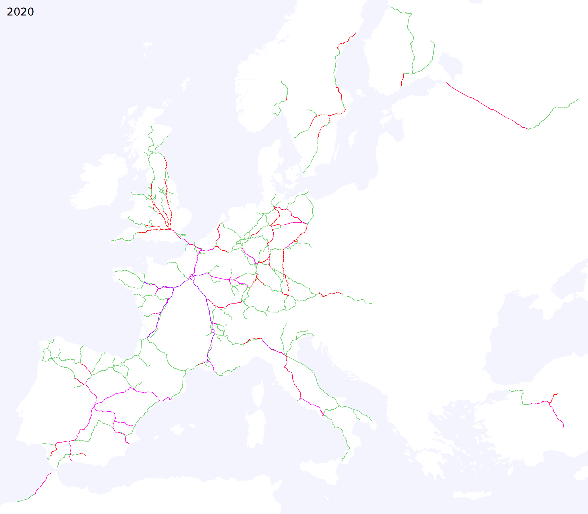
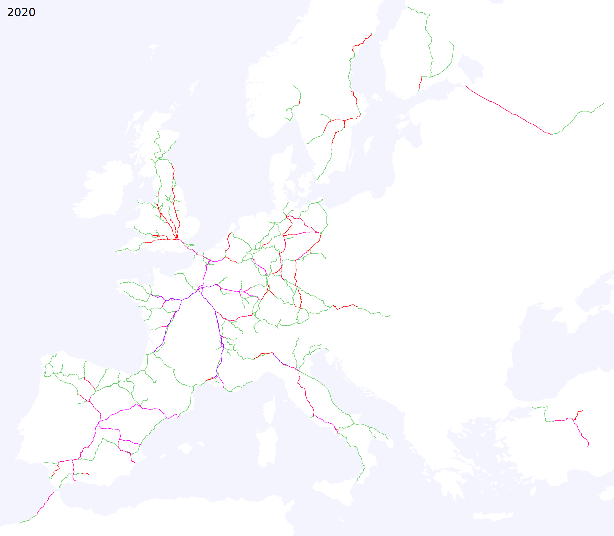
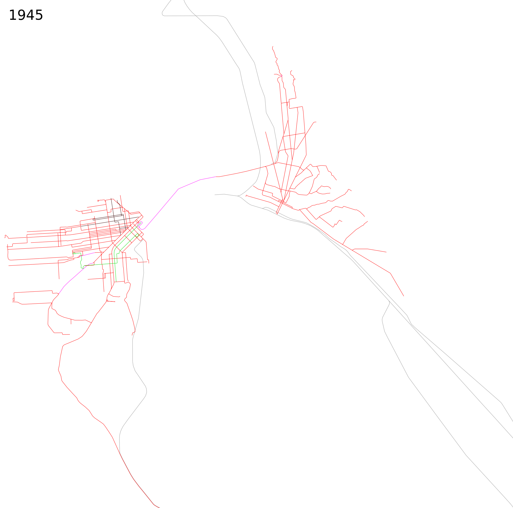

Miscellaneous (not strictly rapid transit) timelines:
High-speed rail, 1965-2020 
Regional passenger rail timelines, 1835-2010:
Northeast US
 California
California
City rail (including streetcar) and trolleybus timelines, 1835-2020:
New York
Boston
San Francisco

New York trolley abandonment,
1932-1957
 Hurricane Sandy rapid transit recovery,
Hurricane Sandy rapid transit recovery,October 2012-June 2013
 Nonstop flights from New York,
Nonstop flights from New York,1930-2020

Other maps:
Scale comparison of streetcar systems, 2019


 Scale comparison of selected walled cities,
Scale comparison of selected walled cities,
500 BCE-1800 CE


Google maps: Google charts:
Scale comparison of selected walled cities,500 BCE-1800 CE
Google maps: Google charts:
Note: above maps not all at same scale.
See also: historical rapid transit timelines, 1840-2020
By Alexander Rapp (CC-BY-SA) based on map data by OpenStreetMap and Wikimedia contributors and historical sources.